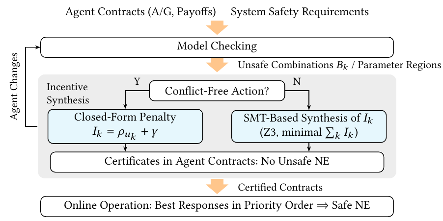

Assume–guarantee (A/G) contracts provide formal specifications for the modular design and verification of cyber-physical systems (CPS) by specifying each component through the assumptions it makes on its environment and the guarantees it provides. In multi-agent CPS, however, each component is an agent with its own objective, and a contract does not specify which of its admissible behaviours a self-interested agent will choose when it interacts with other agents. We propose incentive-compatible A/G contracts, which extend A/G contracts in linear temporal logic (LTL) with a payoff for each agent and an enforceable penalty for unsafe joint behaviour. Decisions are finitely many controllers, such as maneuvers or entry times on a fine time grid. Model checking identifies the unsafe combinations of decisions, parameter synthesis turns them into unsafe conditions that the agents evaluate online, and SMT solving computes the penalties together with certificates that exclude each unsafe combination from the Nash equilibria. Each certificate is attached to the contract of an agent that gains at least a fixed margin by changing its own decision. The certificates guarantee that every Nash equilibrium of the composed system is safe, and they remain valid when an agent is replaced by one whose contract refines its own. Agents can also be added and removed while the existing certificates are reused.
Model checking finds the unsafe combinations of decisions. When the guarantees depend on the current state, parameter synthesis computes once, offline, the region of contract parameters (tube or window ends) for which a combination is unsafe; the agents evaluate this unsafe condition online. The penalty of a requirement follows from a formula when one of its agents has a conflict-free action, and from Z3 otherwise. The certificates show that no unsafe combination is a Nash equilibrium. After a change, only the affected certificates are re-checked.

A main lane and an on-ramp, after the merging scenario of Oh et al. (DATE 2019), with |a| ≤ 5 m/s2 and 0 ≤ v ≤ 10 m/s. Vehicles arrive at random times on the main lane (0.2 or 0.3 vehicles per second) and on the ramp (0.1 per second). Every 0.5 s each vehicle picks one of four 3 s maneuvers, the same on both lanes: Keep holds 8 m/s, Acc speeds up at 2 m/s2 to 10 m/s, Brake brakes at 5 m/s2, and Yield slows to 3 m/s on the main lane or stops 5 m before the ramp end. A follower must stay 2 m behind its leader, and after the merge start (100 m) a ramp vehicle and a main-lane vehicle must stay 2 m apart. The payoff of a vehicle is the time it saves, weighted by a private value of time (1 or 0.5 per second).
Blue: main lane, green: ramp. Red ring: two vehicles closer than 2 m (a collision). The non-cooperative composition deadlocks before the merge region.
| 10 seeds × 300 s | 0.2 veh/s | 0.3 veh/s | ||||
|---|---|---|---|---|---|---|
| entered | collisions | passed | entered | collisions | passed | |
| No coordination | 852 | 43 | 786 | 1074 | 71 | 997 |
| Non-cooperative composition | 354 | 0 | 50 | 376 | 0 | 62 |
| Ours (incentives) | 852 | 0 | 785 | 1074 | 0 | 988 |
Entered: vehicles that enter the section (entry waits while the first 15 m of a lane are occupied). Collisions: vehicle pairs that come closer than 2 m at least once. Passed: vehicles that pass the whole section. With the incentives, no pair collides and the mean travel time is 22.8 s.
CONTRACT M:
parameter {KEEP, ACC, YIELD, BRAKE} variable s_M; -- the decision: a 3 s maneuver
output integer (0:1051) variable p_M; -- position in decimetres
Guarantees: -- position tube per 0.5 s interval
G((t = 0 & s_M = KEEP) -> (p_M >= 737 & p_M <= 791));
G((t = 1 & s_M = KEEP) -> (p_M >= 784 & p_M <= 837));
...
G((t = 5 & s_M = BRAKE) -> (p_M >= 831 & p_M <= 851));
Payoff: (1.544, 0.753) if KEEP; (2, 1) if ACC; (0.98, 0.43) if YIELD; (-0.3, -0.3) if BRAKE;
-- (value of time 1, value of time 0.5)
CONTRACT merge_R_M: Guarantees: G((p_R >= 1001 & p_M >= 1001) -> (p_R - p_M >= 20 | p_M - p_R >= 20));
SYSTEM: Penalty merge_R_M : 0 .. 20; Margin: 0.1;
The corridor-merging scenario of Low et al. (CDC 2026) and its 100 scenarios: in each, eight air taxis start at random positions and headings, at least 1 km apart, and merge into an air corridor with a separation of 500 m. Every 10 s each taxi selects a path to the entry (its current Dubins path, i.e., the shortest path under the turn-rate limit, or one with a holding circle) and an entry time on a 0.1 s grid; it then flies the path at the constant speed that reaches the entry at that time. Its payoff is minus its entry delay times its private value of time (1 or 2 per second). Time-to-reach (TTR) priority assigns entry times in TTR order, but only obedient taxis accept them.
Scenario 1. Squares: the 100 m cells that each taxi occupies at that moment; red: cells occupied by two taxis. Red ring: two taxis closer than 500 m (loss of separation). Yellow dashed ring: a selfish taxi. In the panel with the incentives, every taxi is selfish.
| 100 scenarios × 300 s | without safety filter | with the filter of Low et al. | ||||
|---|---|---|---|---|---|---|
| runs with LoS | runs with a taxi out | success | delay [s] | success | delay [s] | |
| Min TTR (no coordination) | 100 | 0 | 0% | 0.0 | 32% | 32.4† |
| Non-cooperative composition | 100 | 100 | 0% | 60.6† | 0% | 83.6† |
| TTR priority, all obedient | 70 | 0 | 30% | 14.2 | 78% | 16.4 |
| TTR priority, 10% selfish | 83 | 0 | 17% | 12.6 | 80% | 18.1 |
| TTR priority, 30% selfish | 94 | 0 | 6% | 9.8 | 69% | 21.9† |
| TTR priority, 100% selfish | 100 | 0 | 0% | 0.0 | 32% | 32.4† |
| Ours (incentives, all taxis selfish) | 57 | 0 | 43% | 9.5 | 88% | 16.3† |
LoS: loss of separation, two taxis closer than 500 m. Out: a taxi that does not enter within 300 s. Success: share of runs without LoS in which every taxi enters. Delay: mean entry delay over the earliest possible entry. †: over the taxis that enter. With the filter, the taxis also track their paths with the vehicle dynamics of Low et al.
taxi 1: state (-3.422 km, -2.111 km, -2.476 rad), value of time 1 per s, time to reach 80.2 s
decisions: a path and an entry time
Dubins path, length 7.2 km: entry time in [80.2 s, 240.7 s]
with a holding circle, length 12.9 km: entry time in [143 s, 429 s]
guarantee: each 100 m cell within 250 m of the path is occupied only in an open time window
whose ends shift linearly with the entry time tau, e.g., the cell at the entry:
G(occ_1,c -> 0.949 tau < t < 3.855 + tau)
payoff: -(tau - 80.2)
system contract of taxis (i, j): G !(occ_i,c & occ_j,c) for every shared cell c
unsafe condition (generated offline by CHASE): a0 < b1 & b0 < a1 -- the two windows of a cell overlap
penalty at t = 0: 2 x 348.9 + 0.1 = 698.0 -- more than the cost of any change of entry time
All decisions in the videos are computed by the method (penalties, then best responses in a priority order), not scripted.